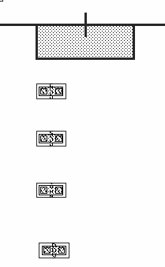

Aligning a Layer with Objects
To align a layer with objects:
-
In the layout window, choose Edit – Advanced – Align.
The Align form opens. -
In the Reference section:
- Select Align Direction as horizontal or vertical.
- Select Layer.
-
Select the layer from the list. For example,
pdiff dg. - Select the layer edge you want the objects to align to.
You are prompted to select a reference object for the alignment. -
On the canvas, click the object you want to align other objects or layers to.
In the following example,pdiff dgis chosen. The alignment pointer appears.
 - In the Align Using section:
- To evenly space the objects in the Align Direction, click the Apply Spacing check box and enter the value in user units in the amount by which you want to separate the objects. If you do not use the Apply Spacing, the objects retain their original spacing. They are aligned, but not evenly spaced.
- Select the Orthogonal Spacing check box to space the objects perpendicular to the Align Direction as well. This option is available only if Apply Spacing is selected.
-
From Sort Objects By, select how you want the objects to be sorted.
You are prompted to select the objects to be aligned. You can select the objects by clicking on each object one at a time, while holding down theShiftkey, or you can select the objects by drawing a selection box around them. -
Click Apply.
The following figure shows an example where the reference layer ispdiff dg, the Align Direction is Horizontal, and the Use field is set to Top Edge. The Align Using is Instance, the Use cyclic is set to Top Edge. The Apply Spacing is selected, with 5.0 user units Between Objects. Objects are sorted by Order Selected.

Related Topics
Object Alignment by Using the Align Command
Return to top